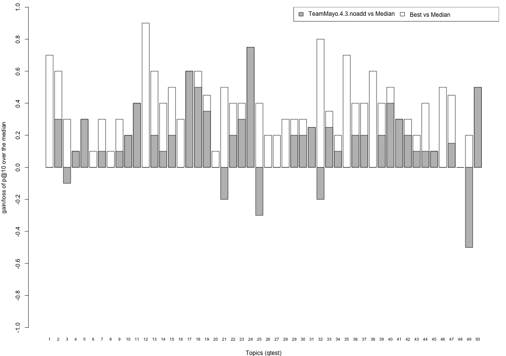

Share/CLEF eHealth 2013 TASK 3 Results - TeamMayo
This page summarises the results obtained from your submissions. Here, you can find the mean performance of your submissions, for all standard trec_eval measures and for nDCG at different ranks. For this first year, the Share/CLEF eHealth 2013 TASK 3 built result pools from your submissions considering the top 10 documents ranked by your baseline system (run 1), and the highest priority run that used the discharge summaries (run 2) and the highest priority run that did not used the discharge summaries (run 5). As a consequence:
- the primary measure for this year is precision at 10 (P@10),
- the secondary measure is Normalised Discounted Cumulative Gain at rank 10 (ndcg_cut_10).
Evaluation with standard trec_eval metrics
These results have been obtained with the binary relevance assessment, i.e. qrels.clef2013ehealth.1-50-test.bin.final.20062013.txt, and trec_eval 9.0 as distributed by NIST. Trec_eval was ran as follows:
./trec_eval -c -M1000 qrels.clef2013ehealth.1-50-test.bin.final.20062013.txt runName
TeamMayo.1.3.noadd
runid all Mayo1Baseline num_q all 50 num_ret all 47395 num_rel all 1878 num_rel_ret all 1619 map all 0.3040 gm_map all 0.1040 Rprec all 0.3126 bpref all 0.3964 recip_rank all 0.5938 iprec_at_recall_0.00 all 0.6640 iprec_at_recall_0.10 all 0.5991 iprec_at_recall_0.20 all 0.5363 iprec_at_recall_0.30 all 0.4503 iprec_at_recall_0.40 all 0.3662 iprec_at_recall_0.50 all 0.2994 iprec_at_recall_0.60 all 0.2399 iprec_at_recall_0.70 all 0.1913 iprec_at_recall_0.80 all 0.1311 iprec_at_recall_0.90 all 0.0989 iprec_at_recall_1.00 all 0.0440 P_5 all 0.4800 P_10 all 0.4720 P_15 all 0.4400 P_20 all 0.3950 P_30 all 0.3360 P_100 all 0.1576 P_200 all 0.0916 P_500 all 0.0431 P_1000 all 0.0324
TeamMayo.2.3.noadd
runid all Mayo2CD num_q all 50 num_ret all 50000 num_rel all 1878 num_rel_ret all 1673 map all 0.3108 gm_map all 0.1059 Rprec all 0.3130 bpref all 0.4137 recip_rank all 0.5963 iprec_at_recall_0.00 all 0.6665 iprec_at_recall_0.10 all 0.6122 iprec_at_recall_0.20 all 0.5613 iprec_at_recall_0.30 all 0.4719 iprec_at_recall_0.40 all 0.3766 iprec_at_recall_0.50 all 0.2884 iprec_at_recall_0.60 all 0.2355 iprec_at_recall_0.70 all 0.1972 iprec_at_recall_0.80 all 0.1369 iprec_at_recall_0.90 all 0.0997 iprec_at_recall_1.00 all 0.0394 P_5 all 0.4960 P_10 all 0.5180 P_15 all 0.4600 P_20 all 0.3990 P_30 all 0.3227 P_100 all 0.1582 P_200 all 0.0933 P_500 all 0.0512 P_1000 all 0.0335
TeamMayo.3.3.noadd
runid all Mayo3MCD num_q all 50 num_ret all 50000 num_rel all 1878 num_rel_ret all 1689 map all 0.2900 gm_map all 0.1016 Rprec all 0.2969 bpref all 0.4150 recip_rank all 0.6390 iprec_at_recall_0.00 all 0.6884 iprec_at_recall_0.10 all 0.6177 iprec_at_recall_0.20 all 0.5404 iprec_at_recall_0.30 all 0.4369 iprec_at_recall_0.40 all 0.3286 iprec_at_recall_0.50 all 0.2535 iprec_at_recall_0.60 all 0.2056 iprec_at_recall_0.70 all 0.1450 iprec_at_recall_0.80 all 0.1054 iprec_at_recall_0.90 all 0.0783 iprec_at_recall_1.00 all 0.0333 P_5 all 0.5280 P_10 all 0.4880 P_15 all 0.4253 P_20 all 0.3660 P_30 all 0.2900 P_100 all 0.1476 P_200 all 0.0888 P_500 all 0.0521 P_1000 all 0.0338
TeamMayo.4.3.noadd
runid all Mayo4MCaDa num_q all 50 num_ret all 50000 num_rel all 1878 num_rel_ret all 1689 map all 0.2967 gm_map all 0.1049 Rprec all 0.2941 bpref all 0.4227 recip_rank all 0.6502 iprec_at_recall_0.00 all 0.7050 iprec_at_recall_0.10 all 0.6283 iprec_at_recall_0.20 all 0.5538 iprec_at_recall_0.30 all 0.4410 iprec_at_recall_0.40 all 0.3272 iprec_at_recall_0.50 all 0.2662 iprec_at_recall_0.60 all 0.2076 iprec_at_recall_0.70 all 0.1673 iprec_at_recall_0.80 all 0.1179 iprec_at_recall_0.90 all 0.0799 iprec_at_recall_1.00 all 0.0384 P_5 all 0.5240 P_10 all 0.4820 P_15 all 0.4227 P_20 all 0.3660 P_30 all 0.2953 P_100 all 0.1494 P_200 all 0.0934 P_500 all 0.0542 P_1000 all 0.0338
TeamMayo.5.3.noadd
runid all Mayo5M num_q all 50 num_ret all 50000 num_rel all 1878 num_rel_ret all 1689 map all 0.3061 gm_map all 0.1091 Rprec all 0.3115 bpref all 0.4152 recip_rank all 0.6091 iprec_at_recall_0.00 all 0.6812 iprec_at_recall_0.10 all 0.6245 iprec_at_recall_0.20 all 0.5502 iprec_at_recall_0.30 all 0.4501 iprec_at_recall_0.40 all 0.3471 iprec_at_recall_0.50 all 0.3010 iprec_at_recall_0.60 all 0.2220 iprec_at_recall_0.70 all 0.1948 iprec_at_recall_0.80 all 0.1404 iprec_at_recall_0.90 all 0.0970 iprec_at_recall_1.00 all 0.0437 P_5 all 0.5120 P_10 all 0.5040 P_15 all 0.4467 P_20 all 0.3860 P_30 all 0.3120 P_100 all 0.1568 P_200 all 0.0921 P_500 all 0.0465 P_1000 all 0.0338
TeamMayo.6.3.noadd
runid all Mayo6MC num_q all 50 num_ret all 50000 num_rel all 1878 num_rel_ret all 1689 map all 0.2953 gm_map all 0.1042 Rprec all 0.2905 bpref all 0.4156 recip_rank all 0.6176 iprec_at_recall_0.00 all 0.6817 iprec_at_recall_0.10 all 0.6236 iprec_at_recall_0.20 all 0.5381 iprec_at_recall_0.30 all 0.4423 iprec_at_recall_0.40 all 0.3374 iprec_at_recall_0.50 all 0.2633 iprec_at_recall_0.60 all 0.2103 iprec_at_recall_0.70 all 0.1625 iprec_at_recall_0.80 all 0.1133 iprec_at_recall_0.90 all 0.0841 iprec_at_recall_1.00 all 0.0375 P_5 all 0.5160 P_10 all 0.4940 P_15 all 0.4373 P_20 all 0.3720 P_30 all 0.2980 P_100 all 0.1502 P_200 all 0.0891 P_500 all 0.0519 P_1000 all 0.0338
TeamMayo.7.3.noadd
runid all Mayo7MCa num_q all 50 num_ret all 50000 num_rel all 1878 num_rel_ret all 1689 map all 0.2981 gm_map all 0.1049 Rprec all 0.3031 bpref all 0.4270 recip_rank all 0.5731 iprec_at_recall_0.00 all 0.6673 iprec_at_recall_0.10 all 0.6192 iprec_at_recall_0.20 all 0.5509 iprec_at_recall_0.30 all 0.4461 iprec_at_recall_0.40 all 0.3494 iprec_at_recall_0.50 all 0.2751 iprec_at_recall_0.60 all 0.2152 iprec_at_recall_0.70 all 0.1738 iprec_at_recall_0.80 all 0.1234 iprec_at_recall_0.90 all 0.0894 iprec_at_recall_1.00 all 0.0421 P_5 all 0.4920 P_10 all 0.4700 P_15 all 0.4120 P_20 all 0.3610 P_30 all 0.2980 P_100 all 0.1528 P_200 all 0.0907 P_500 all 0.0524 P_1000 all 0.0338
Evaluation with nDCG
These results have been obtained with the graded relevance assessment, i.e. qrels.clef2013ehealth.1-50-test.graded.final.20062013.txt, and trec_eval 9.0 as distributed by NIST.To obtain nDCG at different ranks, trec_eval was ran as follows:
./trec_eval -c -M1000 -m ndcg_cut qrels.clef2013ehealth.1-50-test.graded.final.20062013.txt runName
TeamMayo.1.3.noadd
ndcg_cut_5 all 0.4370 ndcg_cut_10 all 0.4408 ndcg_cut_15 all 0.4369 ndcg_cut_20 all 0.4254 ndcg_cut_30 all 0.4234 ndcg_cut_100 all 0.4711 ndcg_cut_200 all 0.5056 ndcg_cut_500 all 0.5327 ndcg_cut_1000 all 0.5571
TeamMayo.2.3.noadd
ndcg_cut_5 all 0.4391 ndcg_cut_10 all 0.4665 ndcg_cut_15 all 0.4512 ndcg_cut_20 all 0.4312 ndcg_cut_30 all 0.4102 ndcg_cut_100 all 0.4733 ndcg_cut_200 all 0.5127 ndcg_cut_500 all 0.5459 ndcg_cut_1000 all 0.5648
TeamMayo.3.3.noadd
ndcg_cut_5 all 0.4742 ndcg_cut_10 all 0.4584 ndcg_cut_15 all 0.4395 ndcg_cut_20 all 0.4197 ndcg_cut_30 all 0.3929 ndcg_cut_100 all 0.4548 ndcg_cut_200 all 0.4978 ndcg_cut_500 all 0.5384 ndcg_cut_1000 all 0.5638
TeamMayo.4.3.noadd
ndcg_cut_5 all 0.4837 ndcg_cut_10 all 0.4637 ndcg_cut_15 all 0.4432 ndcg_cut_20 all 0.4226 ndcg_cut_30 all 0.4020 ndcg_cut_100 all 0.4645 ndcg_cut_200 all 0.5076 ndcg_cut_500 all 0.5445 ndcg_cut_1000 all 0.5699
TeamMayo.5.3.noadd
ndcg_cut_5 all 0.4645 ndcg_cut_10 all 0.4618 ndcg_cut_15 all 0.4476 ndcg_cut_20 all 0.4260 ndcg_cut_30 all 0.4093 ndcg_cut_100 all 0.4752 ndcg_cut_200 all 0.5113 ndcg_cut_500 all 0.5440 ndcg_cut_1000 all 0.5708
TeamMayo.6.3.noadd
ndcg_cut_5 all 0.4639 ndcg_cut_10 all 0.4579 ndcg_cut_15 all 0.4449 ndcg_cut_20 all 0.4224 ndcg_cut_30 all 0.3981 ndcg_cut_100 all 0.4612 ndcg_cut_200 all 0.5011 ndcg_cut_500 all 0.5406 ndcg_cut_1000 all 0.5656
TeamMayo.7.3.noadd
ndcg_cut_5 all 0.4348 ndcg_cut_10 all 0.4332 ndcg_cut_15 all 0.4167 ndcg_cut_20 all 0.4019 ndcg_cut_30 all 0.3909 ndcg_cut_100 all 0.4620 ndcg_cut_200 all 0.5031 ndcg_cut_500 all 0.5366 ndcg_cut_1000 all 0.5640
Plots P@10
The plots below compare each of your runs against the median and best performance (p@10) across all systems submitted to CLEF for each query topic. In particular, for each query, the height of a bar represents the gain/loss of your system and the best system (for that query) over the median system. The height of a bar in then given by:
grey bars: height(q) = your_p@10(q) - median_p@10(q) white bars: height(q) = best_p@10(q) - median_p@10(q)
TeamMayo.1.3.noadd
TeamMayo.2.3.noadd
TeamMayo.3.3.noadd
TeamMayo.4.3.noadd
TeamMayo.5.3.noadd
TeamMayo.6.3.noadd